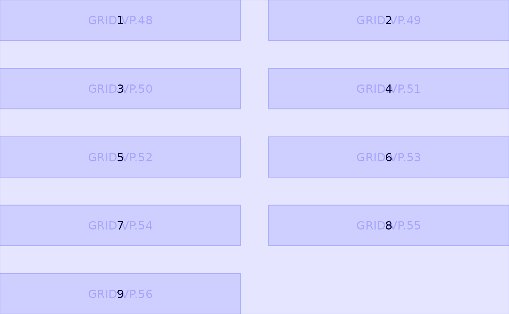
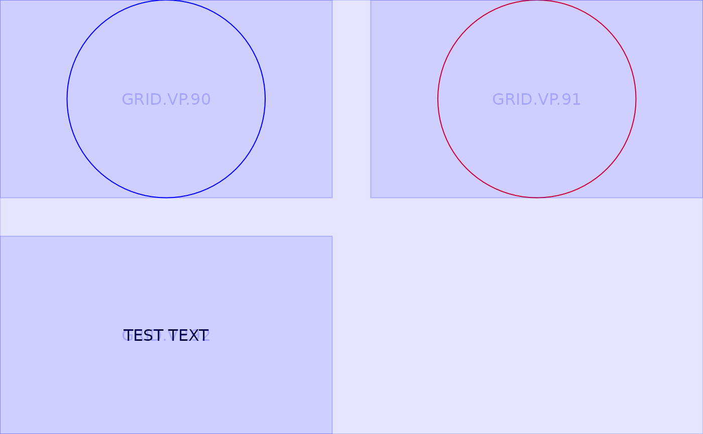
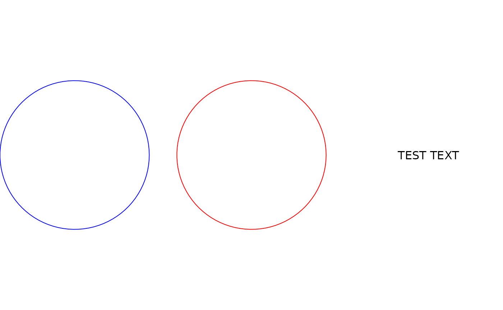
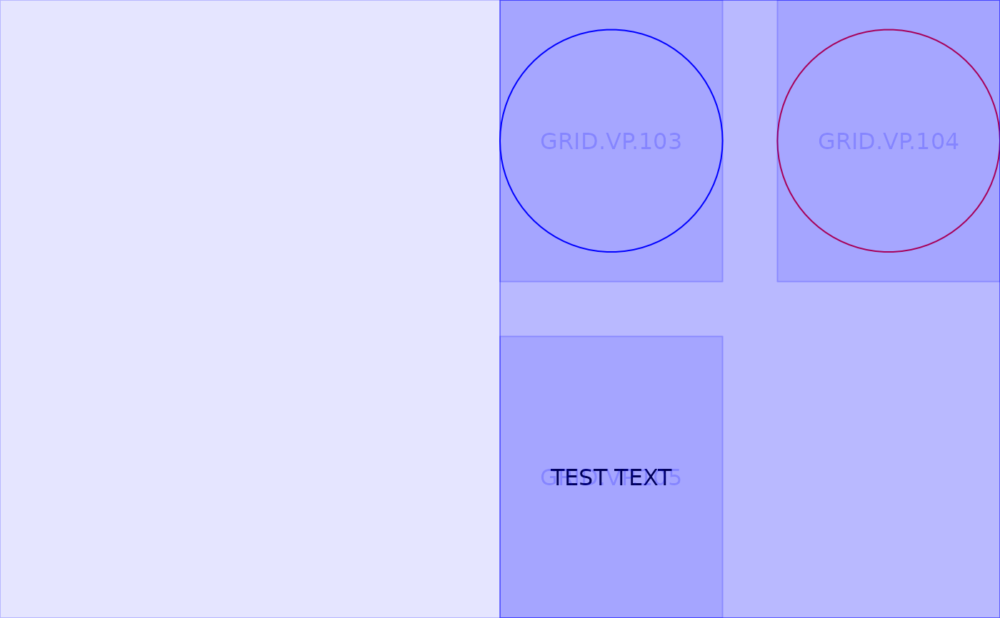

![[Deprecated]](figures/lifecycle-deprecated.svg)
Arrange grobs as a new grob with n * m (rows * cols) layout.
Arguments
- ...
grobs.
- grobs
(
listofgrob)
a list of grobs.- ncol
(
integer(1))
number of columns in layout.- nrow
(
integer(1))
number of rows in layout.- padding_ht
(
grid::unit)
unit of length 1, vertical space between each grob.- padding_wt
(
grid::unit)
unit of length 1, horizontal space between each grob.- vp
(
viewportorNULL)
aviewport()object (orNULL).- gp
(
gpar)
agpar()object.- name
(
string)
a character identifier for the grob.
Examples
library(grid)
# \donttest{
num <- lapply(1:9, textGrob)
grid::grid.newpage()
grid.draw(arrange_grobs(grobs = num, ncol = 2))
#> Warning: `arrange_grobs()` was deprecated in tern 0.9.4.
#> ℹ `tern` plotting functions no longer generate `grob` objects.
showViewport()

g1 <- circleGrob(gp = gpar(col = "blue"))
g2 <- circleGrob(gp = gpar(col = "red"))
g3 <- textGrob("TEST TEXT")
grid::grid.newpage()
grid.draw(arrange_grobs(g1, g2, g3, nrow = 2))
showViewport()

grid::grid.newpage()
grid.draw(arrange_grobs(g1, g2, g3, ncol = 3))

grid::grid.newpage()
grid::pushViewport(grid::viewport(layout = grid::grid.layout(1, 2)))
vp1 <- grid::viewport(layout.pos.row = 1, layout.pos.col = 2)
grid.draw(arrange_grobs(g1, g2, g3, ncol = 2, vp = vp1))
showViewport()

# }